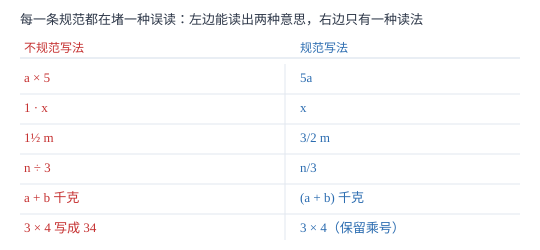

代数式的书写规范
六条规范各自堵一个真实的误读：11/2a 能读出两个值，a3 会被当成编号，a+b 千克会被读成「b 千克」。
| 所属主题 | 代数式 |
|---|---|
| 所属模块 | 代数 |
| 课标学段 | 第四学段（7~9 年级） |
| 前置知识 | 代数式与字母表示数 |
| 核心素养 | 抽象能力运算能力 |
教材定位
人民教育出版社《人教版（2024版）义务教育教科书·数学》
七年级上册第3章 代数式3.1 列代数式表示数量关系
对应七上 3.1 第 1 课时中「代数式的书写」部分。教材用示范加典型错例落实格式要求；本篇把六条规范逐条还原成「堵哪种误读」，并补上「数与数相乘不能省乘号」这条教材未强调却高频出错的分界。
说明
书写规范看似是形式要求，其实每一条都在堵一个漏洞。判断标准只有一句话：换一个人来看，会不会读成另一个式子？会，就必须改。
六条规范。① 乘号省略：字母与字母、数与字母相乘，乘号写作「·」或直接省略，a× b 写成 ab；数与数相乘仍用「×」，3× 4 不能写成 34。② 数字在前：a× 3 写成 3a，不写 a3。③ 1 与 -1 省略：1\cdot a 写成 a，-1\cdot b 写成 -b，1\cdot ab 写成 ab。④ 带分数化假分数：11/2a 必须写成 3/2a。⑤ 除法写成分数：a÷ b 写成 a/b，a÷ 3 写成 a/3。⑥ 和差带单位加括号：(a+b) 千克，不写 a+b 千克。
还有三条配套习惯：a\cdot a 要写成 a^2；分数系数与字母相乘时分数写在字母前，如 1/2ab；同一个字母在式子中出现多次也不合并（合并是整式化简的事），书写阶段只解决「怎么写」，不解决「怎么算」。
使用场景
规范题在考试里以两种形式出现。第一种是选择题：给出四个写法，选出规范的或选出错误的。第二种是填空题：要求「用含 x 的式子表示」，评分标准对写法有硬要求，x3、11/2x、x÷ 2 都会被扣分，即使数值算对。
自己写作业时，规范写法还能救自己：把 a÷ b 写成 a/b 后，约分的对象一目了然；把 (a+b) 千克的括号写上，代入具体数值时才不会漏乘；把 11/2a 化成 3/2a 后，代入时直接乘，不用先想「这到底是 1 加一半还是 1 乘一半」。
注意点
数与数相乘的乘号不能省：3× 4 写成 34 就变成三十四了。只有乘号两侧至少有一个是字母时，才能省乘号。
带分数与字母相乘必须先化假分数，因为 11/2a 天然有两种读法：1×1/2a=1/2a，或 (1+1/2)a=3/2a。一个写法对应两个值，必须消灭歧义。
括号不是装饰。a+b 千克，读者容易理解成「a 加上 b 千克」两部分；加上括号写成 (a+b) 千克，才明确「整个式子的结果」是一个量。
证明

图 1：每一行左边都能读成两种意思，右边只有一种读法——规范的作用是消除歧义，不是增加负担
证明
结论 1数字写在字母前面（3a 而非 a3），是为了让「系数」与「字母部分」在视觉上分开，这是后面合并同类项时读式子的方式。
以 2x+3x 为例。写成 2x、3x 时，每个项的结构都是「数字 + 字母部分」，读的时候眼睛先落在数字上，立刻知道系数是 2 和 3，字母部分同为 x，于是可以合并为 5x。若允许写成 x2、x3，那么 x2+x3 里的 2 和 3 究竟是与 x 相乘还是编号，就要靠猜；一旦出现 x^23 这类写法，歧义会直接导致算错。
关键一步依据是：书写形式决定读式子的顺序，统一「数字在前」使「系数 + 字母部分」成为唯一读法。
结论 2带分数与字母相乘必须先化成假分数，否则同一个写法会对应两个不同的值。
11/2a 有两种合法读法：看成 1 与 1/2a 相乘，得 1/2a；看成带分数 11/2 与 a 相乘，得 3/2a。取 a=4，前者得 2，后者得 6，差了三倍。一个符号串同时指向两个数，说明写法本身有问题；把带分数化成 3/2 后只剩一种读法，歧义消失。
关键一步依据是：数学符号必须一一对应，同一个式子不能有两种取值。
结论 3和或差的形式带单位时必须加括号。
单位紧跟在「一个量的整体」后面。写 a+b 千克，按从左到右的读法，单位先与 b 结合，得到「a 加上 b 千克」，也就是把 a 当成了不带单位的数，量纲不一致。加上括号写成 (a+b) 千克，括号把 a+b 打包成一个量，单位再作用于这个整体，读法唯一。取 a=3、b=2，正确读法是「5 千克」，错误读法是「3 加 2 千克」。
关键一步依据是：单位作用于一个量，括号用来声明「哪个整体才是那个量」。
动手实验
把自己最近三次作业里的代数式抄到一张纸上，按六条规范逐条打勾。通常会发现两类高频错误：分数系数写成 11/2x，以及除法留着除号。改完再请同学只读你的式子、不看题目，看他读出的意思和你原本想写的是否一致——读错了说明写法还有歧义。
解题思路
改错题按顺序查六关，一关一关过，不要凭整体感觉。第一关看乘号：数与字母、字母与字母之间有没有残留「×」？有就省掉。第二关看位置：字母是不是跑到了数字前面？第三关看 1：有没有 1x、-1x 这种多余的数字？第四关看带分数：字母前是不是带分数？第五关看除号：式子里的「÷」是不是还留着？第六关看单位：和差形式后面跟单位时有没有括号？
自己写式子时，先用最朴素的方式写出来（带乘号、带除号、想怎么写就怎么写），再按六关逐条改写。写完做一次回读：把式子念成一句中文，看这句话与列式时想表达的数量关系是否一致。例如 a+b/2 念作「a 与 b 的和的一半」；若你想说的是「a 的一半与 b 的一半之和」，那应该是 a/2+b/2——写法不同，意思不同。
按场景的例题
例 1（场景：测量与工程） 作业本上的不规范写法
把下列写法改成规范写法：a× 5、1\cdot x、11/2m、n÷ 3、x\cdot x、a+b 千克。
解：a× 5\to 5a（数字在前）；1\cdot x\to x（1 省略）；11/2m\to3/2m（带分数化假分数）；n÷ 3\ton/3（除法写成分数）；x\cdot x\to x^2（相同字母相乘写成乘方）；a+b 千克 \to(a+b) 千克（和差带单位加括号）。
答：依次为 5a、x、3/2m、n/3、x^2、(a+b) 千克。
例 2（场景：销售与利润） 买笔与本子
一支笔 x 元，一本本子 y 元。买 3 支笔和 2 本本子，总价怎么表示？若打八折呢？
解：总价为 3x+2y（元）；打八折乘 0.8，得 0.8(3x+2y)，也可展开成 2.4x+1.6y。写的时候注意：系数 3、2 写在字母前，乘号全省略；括号不能丢，因为 0.8 要乘的是整个总价。
答：(3x+2y) 元；打八折为 0.8(3x+2y) 元。
例 3（场景：图形设计） 长方形周长与面积
一个长方形长 a 厘米，宽比长少 3 厘米。它的周长是多少？面积是多少？
解：宽为 (a-3) 厘米。周长 =2[a+(a-3)]=2(2a-3)=4a-6（厘米）；面积 =a(a-3)=a^2-3a（平方厘米）。带单位时和差形式必须加括号：(4a-6) 厘米，不能写 4a-6 厘米。
答：周长 (4a-6) 厘米，面积 (a^2-3a) 平方厘米。
例 4（场景：行程与速度） 步行上学所需时间
小明家到学校 s 米，他步行每分钟 v 米。用式子表示他上学所需时间；若 s=900、v=75，需要多少分钟？
解：时间 =s÷ v，按规范写成 s/v（分钟）。代入得 900/75=12 分钟。注意写法：不能写成 s÷ v，也不写 s/v，前者留着除号，后者用了斜杠，都不合规范。
答：时间为 s/v 分钟；s=900、v=75 时为 12 分钟。
常用推论
系数是 1 或 -1 时必须省略数字：1x 写 x，-1x 写 -x。反过来读式子时，x 的系数是 1，-x 的系数是 -1——省略不等于没有。
同一个式子可以有多种规范写法，但要选最省事的：3/2a 与 1.5a 都规范，含分数时通常优先分数；0.8(3x+2y) 与 2.4x+1.6y 都对，要继续代入就展开，要提公因式就保留括号。
带单位的量，只有式子是单项式（如 5a 米、a^2 平方米）时括号可省；只要是和差形式，括号一律不能省。
易错点
错3× 4 也省乘号，写成 34。
为什么错误以为「乘号都能省」。规范允许省乘号的前提是「乘号两侧至少有一个是字母」，两个数相乘省掉乘号就变成了另一个数。
正确数与数相乘保留「×」或「·」：3× 4=12。只有 3a、ab 这类才省乘号。
错把 11/2x 直接当答案交上去。
为什么错把带分数当成一个整体符号，忽略了它有两种读法：1×1/2x 与 3/2x。
正确先化假分数：11/2x=3/2x。同理 21/3a 写成 7/3a。
错周长写成 4a-6 厘米。
为什么错式子是差的形式，没加括号，单位会只跟最后一项结合，读成「4a 减 6 厘米」。
正确写成 (4a-6) 厘米。判断口诀：式子里最后一步运算是加减，带单位就要括号。
直观理解
把代数式想成一句话，规范就是标点和语序。ab 是「a 乘 b」，a3 看起来像「a 号」，11/2a 让人分不清是「一点五」还是「一加一半」——句子有歧义，读者只能猜。六条规范做的事，就是让每个式子只有一种读法，谁看都一样。